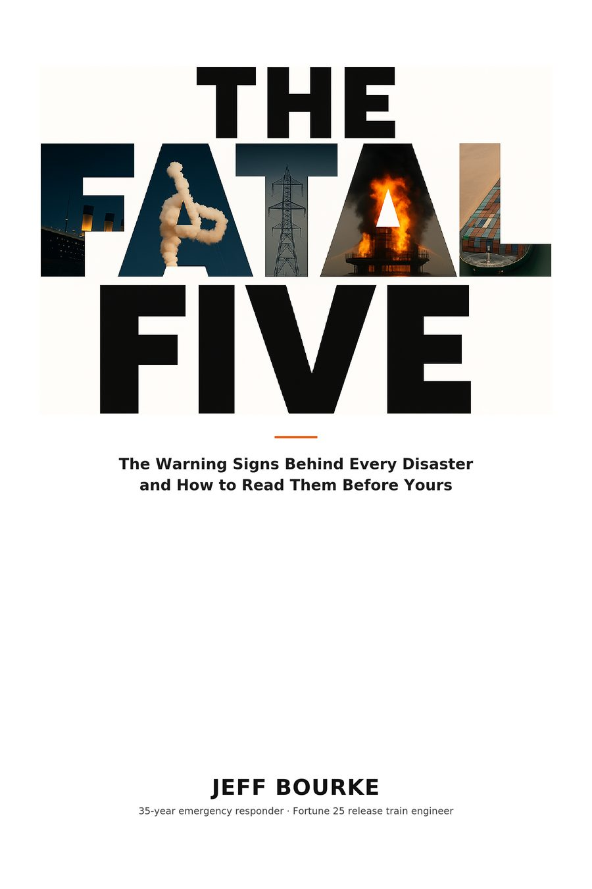
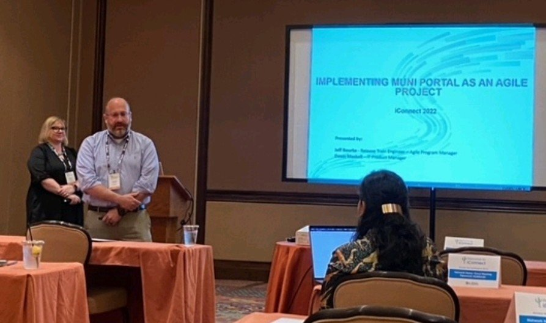
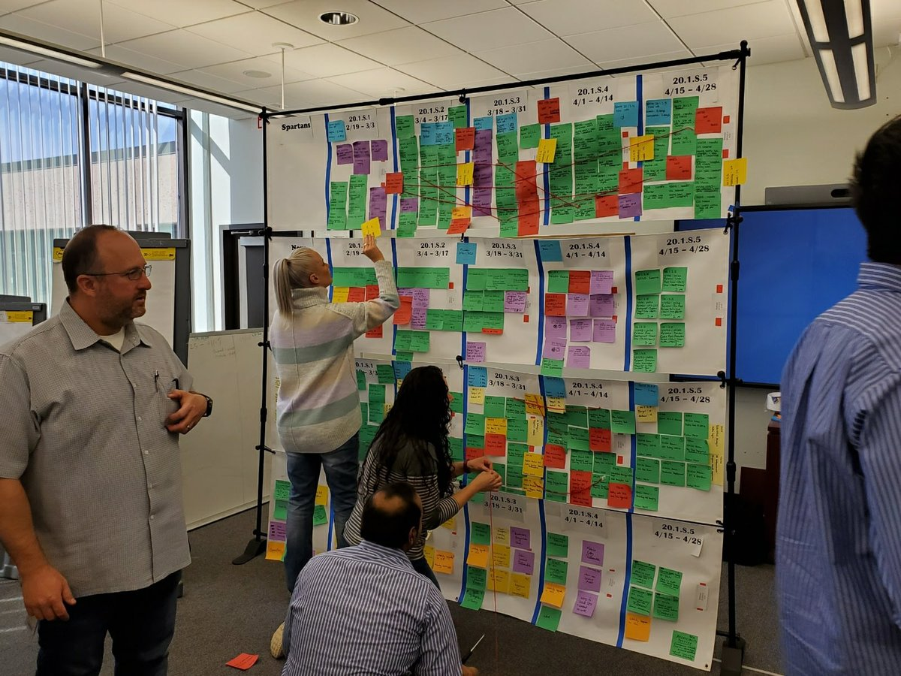

At nine years old, I watched an explosives plant burn from my grandparents' farm.
I've spent forty years since asking two questions: when everything breaks, what do the people who run toward it actually do — and why did it break at all? Thirty-five years in emergency medicine and two decades leading enterprise delivery gave me the same answer from both sides. The warnings are almost always there. This is how to read them.
Deepwater Horizon. Challenger. The Key Bridge. The CrowdStrike outage. A condo tower in Surfside. Different industries, different decades — the same five organizational failures, every time.
I call them the Fatal Five. They aren't the property of oil rigs or airlines or software. They're the property of organizations under pressure — which is to say, yours.
The five failures behind every disaster
Each one is visible before the catastrophe. Each one has a corporate twin you've probably seen this quarter.
The Filed Warning
The recommendations that would have winterized the Texas grid were written in 2011. They sat unimplemented for a decade, until Winter Storm Uri killed more than two hundred people in 2021.
The Message That Never Arrived
The night before Challenger launched, engineers argued against it. Their data never reached the people who made the call in the form it needed to.
The Debt Comes Due
The hook that started the Camp Fire was ninety-nine years old. Inspection had been deferred as a matter of business strategy. Eighty-five people died.
The Ignored Voice
Grenfell Tower's residents predicted the fire in writing, on a blog, years before it happened. Seventy-two people died. Nobody with authority was reading.
The Seams
Healthcare.gov launched with fifty-five contractors and no one responsible for making them work together. It collapsed on day one.
Every case is anchored to its official investigation record — commission findings, safety-board reports, public inquiries. The full corpus is published; you can check every one.

The Fatal Five
Sixty-five disasters, one pattern, and the delivery discipline that interrupts it. Written by someone who has run incident command in two worlds — as an emergency responder who has worked real disasters, and as a release train engineer inside Fortune 25 delivery organizations — this is the field guide for the people closest to the work, and for the leaders whose job is to listen when they sound the alarm.
- The five patterns, each traced through real cases from the Titanic to the CrowdStrike outage
- When People Rise — what Sully, Apollo 13, and Qantas 32 prove about preventing the unpreventable
- The Fatal Five assessment and countermeasures you can run in your organization Monday
I've run incident command with sirens and with sprint boards.
For twenty years I've led large-scale delivery for Fortune 500, Fortune 100, and Fortune 25 organizations — currently as a Lead Release Train Engineer in healthcare, running trains of up to twelve teams and planning events for five hundred people.
But my first career never ended. Thirty-five years in emergency medical services, and I still hold my EMT card. Training officer. Founder of an EMS training center. Graduate of the Department of Homeland Security's Center for Domestic Preparedness, where my final exam was a simulated chemical attack on a courthouse. I've worked real disasters from the medical side, and I've spent years teaching people how to.
Somewhere along the way I noticed the failures were the same. The patterns before a mass-casualty incident are the patterns before a failed release. Different stakes, identical anatomy. This site — and the book — is what I've learned from standing in both.
Case files from the research corpus
The Ship That Everyone Knew Was a Gamble
The Hindenburg's operator flew the airship it could fuel, not the one it wanted — and trusted two years of routine over the hazard that routine was managing.
The Change Order Nobody Re-Calculated
A fabrication convenience doubled the load on the Hyatt Regency's walkway connections. A sign-off checked the drawing, not the physics.
The Fire That Happened Before I Was Born
Twenty minutes from where I grew up, 167 people died under a circus tent in eleven minutes. A known hazard, flagged, and normalized instead of fixed.
Is your organization drifting?
Four questions, two minutes, no email required. A quick read on whether your team is exhibiting the pattern behind most of the disasters in the book — with a full explanation of what your score means.
Bring it to your organization
I speak to conferences and leadership teams about why disasters repeat — and what the teams and leaders who interrupt them do differently. I also work directly with delivery organizations on the assessment and the countermeasures.


The Fatal Five
Why disasters follow the same five patterns, from Deepwater to CrowdStrike.
When People Rise
What Sully, Apollo 13, and QF32 teach about building the organization that survives its worst day.
The Responder in the Boardroom
Triage, incident command, and calibration disciplines from emergency response, applied to delivery.
Start a conversation
Speaking, consulting, or just want to talk about the framework — reach out.